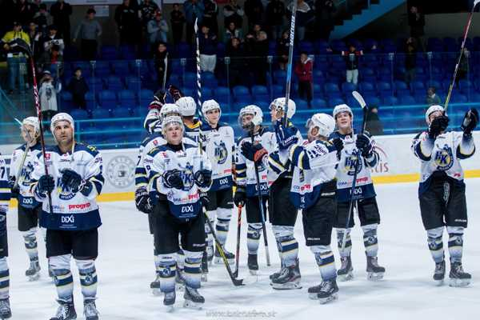
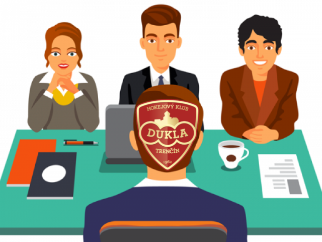
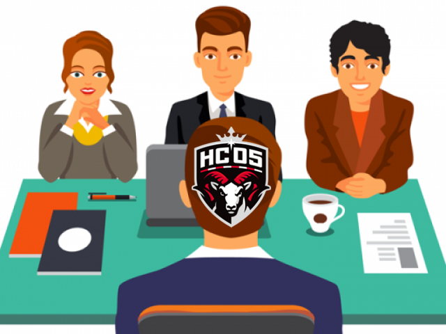

News📢
HK SPIŠSKÁ NOVÁ VES - MAJSTER 🏆
Víťazný pohár Vladimíra Dzurillu dnes nad hlavu zdvihla Spišská Nová Ves, ktorá sa oficiálne stáva prvým majstrom Tipsport ligy! Po výhre 2:1 na série vo finále, kde porazila Trenčín. Hráči Dukly si tak odnášajú strieborné medaile a HC Košice získali bronzovú medailu v boji o 3.miesto

News📢
HK Dukla Trenčín odstupuje zo súťaže🛑
V lige nastala ďalšia ale už žiaľ nepekná zmena. Dukla opúšťa Tipsport ligu, kvôli strate manažéra a vynechá celú 2.sezónu a nám neostáva nič iné len poďakovať za účasť v prvej sezóne, kde to Trenčín dotiahol až na striebornú medailu. Snáď sa vedeniu klubu podarí získať do ďalších sezón nového manažéra alebo sa im podarí získať späť svojho starého manažéra. Tak či onak vedenie ligy ich návrat späť privíta s veľkou náručou.

News📢
Manažérske kreslo v Bystrici
Ďalšia zmena nastala na poste manažéra v Banskej Bystrici, kde vedenie klubu zmenilo manažéra. Novým manažérom klubu HC `05 Banská Bystrica, ktorý prešiel pracovným pohovorom sa stáva steeve. V turnaji prajeme veľa úspechov na mieste manažéra.